Note that there is now only one menu for period selection.
report. These can include custom parameters.
The Settings button
The period for which the report is being printed should be in the report heading. However as this is determined by the period you choose when you run the report, you cannot “hard-wire” the period name into the title. You can however use a report variable that will insert it for you.
This is the very first part in the report specification.
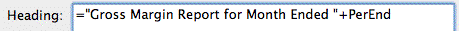
You can put an expression into a heading (or into a cell). In this case we are using a report variable called PerEnd, which will display the end date of the period for which the report is being printed. For a complete list of these variables —see Report Variables.
The report should have headings above the Sales and the Cost of Sales sections. We’ll leave these as an exercise! Don’t forget to save your report—you’ll be able to use it when you run your actual accounts.
The final report should appear as shown below
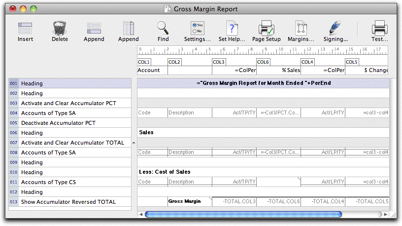
When finished, you will need to close your report.
You will be asked if you want to save the changes. Click Save.
If you want to print your report again, you do not need to re-open it. The report should be listed in the Reports menu.
If you want, you could extend the report into a full profit and loss report. As a guide to how to do this, you simply need to:
Add a part to get other income (accounts of type Income);
Show (Reversed) the TOTAL accumulator (this is your net income)
Add a part to get other expenses (accounts of type Expense);
Show (Reversed) the TOTAL accumulator (this is your Net Profit/Loss);
Pretty it up with a few headings
As you can see, the reporting in MoneyWorks is very rich and powerful, and not too difficult to understand. We recommend that you experiment and create your own reports, see what they produce, change them, enhance them. You might like to look at some of the standard reports that come with MoneyWorks (to find out how to open an existing report, see Custom Reports.
But you can do an awful lot more than just look at the general ledger ...
We can in fact design reports around any file in MoneyWorks, allowing for Customer, Product and Job reports amongst others. To illustrate this, we’ll write a quick report to show our top debtors.
To do this you can either create a new custom report (choose File>New>New Custom Report), or just append the required parts onto the bottom of the report we have just created.
In the previous section we only looked at the general ledger. Now we want to step through each of our customers. To do this we use the For Each part, which steps through each record of the nominated file that meets a specified criteria.
Set the options as shown below
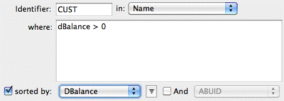
This is going to step through each customer (i.e. each record in the Name file) which has a DBalance value greater than zero (i.e. they owe us something). This is sorted by the amount owed (note that we have set the sort to descending). We have named the current record being processed CUST so that we can refer to it in later calculations.
Click OK to close the For Each part
In the Value field, type “=CUST.Code” (without the quotes), set the Align
to Left, and click OK
When the report is printed, MoneyWorks will evaluate this formula, which will give us the value of the code field in the name record being processed.
We’ll put the name and balance in columns 2 and 3 of the report—if you are creating a new report, you will need to append a couple of columns.
Set the Value of the COL2 cell to “=CUST.Name”, and Align to Left
You should have something like:
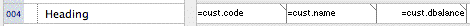
This is where the For Loop terminates. Basically every report part between the For Each and the End For is processed for each record found in the file (or list) that the For Loop is traversing.
You should get a list of everyone who owes you anything. We want to limit the report to just those who owe more than a specified amount, which we will enter when the report runs. Such a custom setting is done in the report Settings.
Turn off the Standard Settings and the Time Interval Spec, and turn on the
Custom Settings, then click the + button
A My Checkbox custom setting will appear in the list
Double click My Checkbox, set the Control pop-up to Number, the Name
When we run the report, we can now enter a number into MinBal. We just need to change the For Each loop to only search for balances that exceed this value.
Double click the For Each part and change the where formula to:
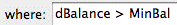
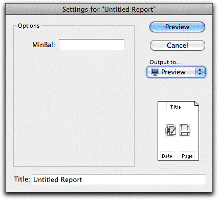
Click the Test button to open the Report Settings windowCustom Reports
The report only lists customers who owe more than the balance entered.
From this, you should have got a hint of the awesome power and flexibility that is available to you in report design in MoneyWorks. We’ve only skimmed the surface—for a more technical discussion see Custom Reports.
1 Actually this is not quite true—if you have a “Null formula” (i.e. just =), the font attributes of the cell will be used instead of the Part style, leaving the underlying information unchanged.↩︎
MoneyWorks reports are designed in a Report Editor window. You create or modify a report to contain the information and the formatting that you want. Reports that you will re-use should be saved into the Reports folder in the MoneyWorks Custom Plug-Ins folder.
MoneyWorks reports can also be used as Plain forms1 and the Bank deposit slip. You should work through the Report Writing Tutorial before reading this section.
Reports are designed using Parts and Columns. Parts determine which accounts, headings and kinds of summary will appear in the report. Columns define what information from the accounts will be presented. A third type of report element, the Cell, can be used to place additional headings into a selected column.
A new Untitled Report appears in a window. The window can be resized or repositioned using the standard window features.
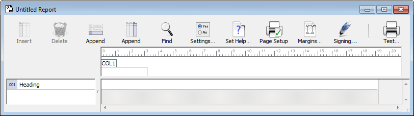
The report contains one Part (an empty Heading) and one blank Column.
You design the report by adding parts and columns and specifying their content. For an introduction to creating reports, you should work through the Report Writing Tutorial.
The File Save dialog box will be displayed. You need to name the report and save it—you should save your reports in the Reports folder in your MoneyWorks Custom Plug-ins folder —see Managing Your Plug-ins for the location of this.
To modify an existing report, you need to open it. This can be done by either:
The standard File Open dialog box is displayed. You need to use this to locate and open the report.
or: Hold the Shift key down, and select the report in the Reports menu
or: if the report has been opened recently, choose File>Open Recent
The report layout is opened.
If you are modifying an existing report, it will be saved (the default location is the reports folder in your MoneyWorks Custom Plug-ins folder).
If this is a new report the standard Save dialog box is displayed—you need to name the report and choose where to save it. Customised reports should be saved in the Reports folder in the Custom Plug-ins folder.
The report will be saved.
This creates a new report document, which you will need to name.
To have a report appears in a list sidebar, the report needs to be saved into a specially named folder in the custom reports folder. The folder has the same name as the MoneyWorks internal name of the list —see Appendix A—Field Descriptions, prefixed by a tilde ~. The folders are:
Folder Name List
~Transaction Transactions
~Account Accounts
~Name Names
~Product Items
~Job Jobs
~JobSheet Job Sheet Items
Note that, although it is intended that such reports should work on a selection of records in the list, any report can in fact appear in the sidebar. However sidebar reports will not appear in your Reports menu or the Index to Reports.
The report editor gives you access to the tools you need to change a report. Whenever you open a report for modification, the report editor window will open displaying the report Parts and Columns (for new reports, there will be only one Part and one Column).
A report is composed of Parts (going down the page) and Columns—these determine the contents of the report. A part may generate more than one line of the report, or not be printed at all. Non-printing parts are shown in grey.
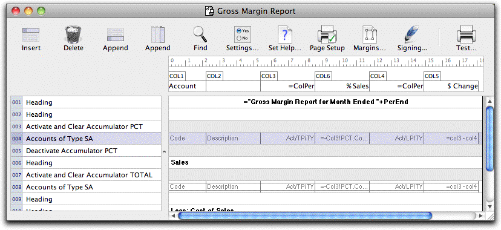
If the part is in the wrong place it can be deleted or cut and pasted into the correct place.
Appending a New Part
Parts can be appended at the end of the report.
Click the Append Part Toolbar button
A new part will appear at the bottom of the report.
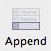
Append Part
The Part Settings dialog box is displayed—for information on the options in this see Report Parts.
If Cancel is clicked, the part will remain unchanged.
Parts can be copied and pasted from one area of a report to another—or from one report to another report entirely. When a part is copied, any Cells on the part come too.
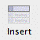
The content and format of this part can be modified by double-clicking on the Part label, or by clicking on the Part label once and pressing the keypad-enter key. If a part is in the wrong place it can be deleted or cut and pasted to the correct place.
Parts can be inserted above existing parts in the report.
the new part by clicking on the part label
Click the Insert Part toolbar button, or press Ctrl-N/⌘-N
A new part is inserted above the highlighted part.
Hold down the Shift key and drag to select consecutive parts.
If you wish to insert the copied part(s) above an existing part in the report, click on the part label to highlight the part
If you want the copied part(s) to be added to the bottom of the report, ensure that no parts are highlighted (by clicking on the white space at the bottom of the report or clicking once on a cell).
The copied part(s) will be pasted into position in the report.
Columns can be cut and pasted as well, but (unlike parts) any Cells in the column will not be pasted.
To remove a part from the report:
Delete
The new column is set to Account Code by default. You can change this default column option by clicking the Make default check box in the Column Settings dialog box as you create a column of a new type.
The column settings can be changed at any time. If the column is in the wrong place it can be deleted or cut and pasted into the correct place.
If you want to delete several consecutive parts, hold down the Shift key and drag from the first to the last part.
The parts will be removed.
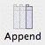
Appending a New ColumnTo append a column to the right hand side of the report:
The Column Settings dialog box is displayed.
Click OK to save the changes
Click the Append Column Toolbar button
A new column will appear on the right of the report.
Append Column
If you click Cancel, the changes are discarded.
The content and format of this column can be modified by double clicking on the Column Label—see Report Columns.
Any of the columns in the report can be resized to accommodate the information being printed in that column.
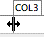
Column resize pointerIf the column is in the wrong place it can be deleted or cut and pasted into the correct place.
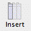
Inserting a New ColumnColumns can be inserted between existing columns in the
The cursor will change into a resize pointer when it is positioned over the right hand edge of the column label.
report.
Insert Column
Highlight the column to the left of where you would like to insert a new column by clicking on the Column Label
Click the Insert Column Toolbar button or press Ctrl-N/⌘-N
A new column is inserted to the left of the highlighted column.
The column is resized on the report.
You can make a column invisible by resizing it so that it has no width.
Often you want to ensure that several columns are exactly the same width. You can do this by:
The columns will be highlighted. Note that the columns must be adjacent.
Click OK to close the Part Settings window
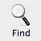
The highlighted parts will now have the font and style attributes selected.
To find the location of some text in the report
1. Click the Find Toolbar icon or press Ctrl-F/⌘-F
Find
All the highlighted columns will be set to the same width as the resized column.
All the highlighted columns will be set to the same width as the column that was clicked. Continue to adjust the widths by dragging right or left.
You can highlight multiple parts in the report and modify the font and style attributes of all the selected parts. However note that in general it is better to use the standard report font. This will avoid potential font conflicts across different machines that may want to use the report.
The Find dialog will open. Enter the text to search for and click Find. The next report element (from that which is currently selected) that contains the text will be highlighted. Press Ctrl-G/⌘-G to find the next occurrence. Note that the searching will recommence at the top of the report once the end is reached.
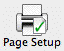
The size of the page that the report is printed on, and hence how much information can appear on the report is determined by the Page Setup and the margin settings for the report. These are saved with the report, and can be adjusted when you print the report.
Click the Page Setup Toolbar icon
The page setup dialog box for your printer is displayed.
Page Setup
The selected parts will be highlighted (they must be contiguous).
The Part Settings window will be displayed. The Part Type will display “Mixed”.
You can change the paper size and (on the Mac) alter the scaling
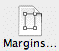
You can also access the Page Setup by clicking the Margins Toolbar button.
Click the Margins Toolbar button
Margins
The Margins Settings window will be displayed—on Windows you can specify the scaling here. For further information see Changing the Margins and Leading
The printed page (as determined by the current settings) is shown in white in the report area. Anything outside of this will not be printed.
You can set the scaling in the Page Setup window (Mac) or the Report Margins window (Windows). A scale of less than 100% gives more room to work in.
Note that the report is automatically scaled to fit if it is too large—this is controlled by the Auto-Scale option in the Margins window.
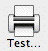
Testing the ReportYou can print or preview a report as you work on it to see how
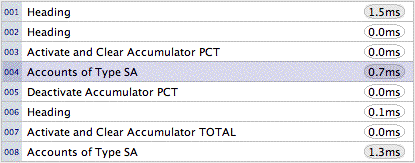
When you test the report from the report writer window, the execution time for each part of the report is recorded and displayed alongside the part (you will only see this if the part selection bar is fairly wide). Profile times are displayed in milliseconds. Parts that were not executed (for example, where an “if” part evaluates to false) will have no time displayed. Parts that take longer than a
it is looking:
Test Print
millisecond to execute will have the time shown with a darker background.
The Report Settings dialog box appears.
Note: If you print the report by choosing it from the Reports menu and you have not saved changes made to the report, those changes will not be reflected in the printout that you get.
If you have users set up for your MoneyWorks file you can restrict access to your report by “signing” it. To sign the report:
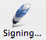
Signing
If you get an error in the report (for example, a badly formed expression or an uninitialised variable), an error dialog will be displayed with the error and part number on it (the offending part or cell in the report is also highlighted). If you want to see the report produced thus far, hold down the option key (Mac) or the Ctrl key (Windows) when you click the OK button in the error dialog.
Tip: To get a trace of the report (to help you debug it if something is not correct) hold down the Option key (Mac) or Ctrl key (Windows) and a trace of the report will open, detailing each part as it is calculated.
The report and form signing window will open—see Protecting Reports and Forms by Signing for more details.